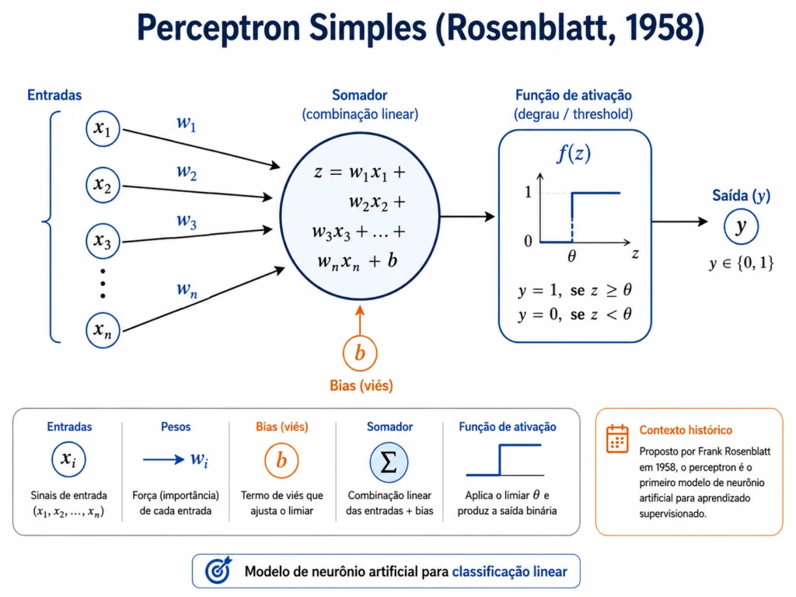

CLIQUE PARA EXPLORAR
× w
→
→
u negativo
u positivog(0.40) = 1
CAPÍTULO 01 · PERCEPTRON
Antes da matemática, experimente: entregue sinais ao neurônio, altere a importância de cada um e observe a decisão mudar.
Explorar o neurônio ↓PARTE TEÓRICA · PERCEPTRON
01 · MODELO
Leia o diagrama da esquerda para a direita: cada exemplo chega como números, esses números são ponderados, somados com um ajuste de referência e, por fim, convertidos em uma decisão.

São as características que descrevem um exemplo. Em uma porta lógica, x₁ e x₂ valem 0 ou 1; em uma imagem, poderiam ser valores de pixels.
Cada peso indica quanto uma entrada influencia a decisão. Um valor positivo favorece a ativação; um valor negativo atua no sentido oposto.
Multiplica cada entrada por seu peso e soma os resultados. Essa soma representa a evidência acumulada pelo neurônio.
Desloca a fronteira de decisão e ajusta o ponto de referência. As notações são equivalentes quando b = −θ.
É o resultado antes da ativação: u = Σ(wᵢxᵢ) + b. No plano, a condição u = 0 define a fronteira.
A função transforma o potencial u na previsão ŷ. No Perceptron clássico, o degrau produz uma saída binária: 0 ou 1. O símbolo ŷ significa “valor de y previsto pelo modelo”.
02 · TREINAMENTO
Treinar significa apresentar exemplos ao modelo várias vezes. Uma época é uma passagem completa por todos os exemplos. A taxa de aprendizado η define o tamanho de cada correção: alta demais pode provocar oscilações; baixa demais torna o aprendizado lento.
Essa subtração mede a diferença entre a resposta correta e a decisão tomada pelo Perceptron.
É o rótulo correto informado no conjunto de treinamento. Por exemplo, y = 1 significa que o exemplo pertence à classe positiva.
Lê-se “y chapéu”. É a resposta calculada pelo Perceptron depois da combinação linear e da função de ativação.
| Situação | Cálculo | O que acontece |
|---|---|---|
| Acertou | 1 − 1 = 0 ou 0 − 0 = 0 | O erro é zero; pesos e bias não precisam ser alterados. |
| Deveria prever 1 | 1 − 0 = 1 | O erro positivo aumenta a tendência de o neurônio ativar para essa entrada. |
| Deveria prever 0 | 0 − 1 = −1 | O erro negativo reduz a tendência de o neurônio ativar para essa entrada. |
Se os dados forem linearmente separáveis, a regra encontra uma solução em um número finito de atualizações. XOR é o contraexemplo clássico: seus pontos não podem ser separados por uma única reta.
ADALINE calcula o erro na saída linear, antes de aplicar um limiar. Sua Regra Delta minimiza o erro quadrático médio usando o gradiente, produzindo um aprendizado mais suave.
APROFUNDAMENTO · BIAS
O bias é um valor treinável somado ao potencial de ativação. Enquanto cada peso multiplica uma entrada, o bias entra diretamente na soma, como se estivesse ligado a uma entrada fixa de valor 1.
Ele permite que o Perceptron produza uma resposta diferente de zero mesmo quando todas as entradas valem zero. Geometricamente, alterar apenas o bias desloca a fronteira w₁x₁ + w₂x₂ + b = 0 sem mudar sua inclinação.
A taxa de aprendizado η controla o tamanho da correção. Se o erro for positivo, o bias aumenta; se for negativo, diminui; se o erro for zero, não muda.
EXPERIMENTO 01
Clique em uma etapa do neurônio para saber o que ela faz. Depois use os controles: tudo abaixo é recalculado na hora.
CONTROLES DIRETOS
EXPERIMENTO 02
Os mesmos pesos movem a reta w₁x₁ + w₂x₂ + b = 0. Ajuste os controles acima e observe cada etapa da montagem da função.
Azul = classe A · Laranja = classe B · Clique em um ponto para incluí-lo na exploração.
EXPLICANDO MATEMATICAMENTE CADA ETAPA
As fases abaixo usam a mesma amostra da porta AND. A previsão começa errada; então acompanhamos exatamente como o erro corrige os pesos e o bias.
As entradas descrevem o exemplo. O alvo y informa a resposta correta somente durante o treinamento.
Leitura: como uma das entradas é zero, a porta AND deve responder zero.
Cada entrada é multiplicada pelo seu peso. Depois, as contribuições são somadas ao bias.
Leitura: x₁ contribuiu com 0,40; x₂ não contribuiu porque vale zero; o bias retirou 0,20. A evidência final foi u = 0,20.
O Perceptron clássico aplica a função degrau. Ela converte o potencial contínuo em uma decisão binária.
Leitura: como 0,20 é positivo, o modelo ativou e previu 1. O símbolo ŷ é a resposta prevista; ainda não sabemos se ela está correta.
O sinal do erro informa a direção da correção. Erro negativo significa que o neurônio ativou quando deveria permanecer desativado.
Leitura: a previsão está errada. O valor e = −1 mandará diminuir o potencial para esta entrada.
A taxa de aprendizado η controla o tamanho do passo. Cada peso também depende de sua entrada; o bias equivale a um peso ligado à entrada constante 1.
Leitura: w₁ e b diminuem. w₂ não muda porque x₂ vale zero e, portanto, não participou do erro desta amostra.
Os deltas calculados não substituem os parâmetros: eles são adicionados aos valores anteriores.
| Parâmetro | Antes | Correção | Depois |
|---|---|---|---|
| w₁ | 0,40 | −0,20 | 0,20 |
| w₂ | 0,30 | 0 | 0,30 |
| b | −0,20 | −0,20 | −0,40 |
Para verificar o aprendizado, apresentamos a mesma entrada novamente, agora usando w₁′, w₂′ e b′.
Resultado: para esta amostra, a previsão passou de 1 para 0 e o erro de classificação passou de −1 para zero.
Uma época termina quando todas as amostras foram apresentadas uma vez. O treinamento é sequencial: cada amostra já recebe os parâmetros deixados pela anterior.
| Amostra AND | x₁ | x₂ | y |
|---|---|---|---|
| 1 | 0 | 0 | 0 |
| 2 | 0 | 1 | 0 |
| 3 | 1 | 0 | 0 |
| 4 | 1 | 1 | 1 |
Importante: se ainda existir erro, começa outra época. O ciclo continua até convergir ou alcançar o limite definido.
PRÓXIMO CAPÍTULO
O Perceptron classifica dados linearmente separáveis, mas não resolve XOR sozinho nem fronteiras complexas. O próximo passo é combinar neurônios.
Explorar fronteiras não lineares →